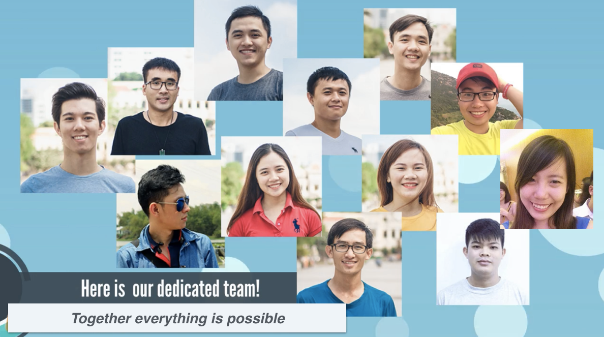

Connecting Souls - hay Câu chuyện về những con người tử tế
Tử tế, không chỉ là một cách sống…
Trúc Phạm, 1 cô gái mạnh mẽ, quyết đoán, 1 leader cầu tiến trong lĩnh vực quản trị và tư vấn chiến lược
Bình Lê, 1 chàng trai năng động, hiện đại, 1 trợ thủ đắc lực cho giám đốc quan hệ khách hàng trong lĩnh vực tài chính ngân hàng
Họ có đam mê, có sở thích, có những mối quan hệ hoàn toàn khác nhau.
Ngoại trừ, một điểm duy nhất, giúp họ tìm được tiếng nói chung: Làm sao để trở thành người tử tế? Hay nói cách khác, làm sao để những hạt giống nhỏ nhoi này, có thể giúp ích cho xã hội?
Chia sẻ, giúp đỡ những người có hoàn cảnh khó khăn, là đáp án nhanh nhất cho câu hỏi của họ.
Nhưng nhanh nhất, liệu có hiệu quả nhất? Khi mà ngoài kia, có quá nhiều hoàn cảnh cần được giúp đỡ, quá nhiều tổ chức thật có, giả có, nửa giả nửa thật có, mang danh từ thiện chiếm đoạt tài sản, quá nhiều chương trình từ thiện chỉ giải quyết được bề nổi của vấn đề, mà không mang lại lợi ích lâu dài, vân vân…
Sống tử tế thật không dễ dàng, khi mà từ thiện lại gắn với quá nhiều thị phi.
Trên con đường tìm câu trả lời, họ cũng đồng thời tìm được những tâm hồn đồng điệu.
Là Lộc Lâm, là Thành Võ, là Phước Võ, những con người tài năng, tâm huyết.
Và, Connecting Souls ra đời.
…mà còn là một việc đáng để nhân rộng
Team Connecting Souls hiện tại có đến 12 người, các bạn đều là những bạn trẻ vừa đi làm vừa tham gia chạy dự án vào cuối ngày và mỗi cuối tuần. Mặc dù gặp rất nhiều khó khăn nhưng các bạn không ngại bỏ thời gian, tiền bạc để thực hiện 1 ước mơ chung... “Giúp đỡ cộng đồng”. Và đây là những con người thầm lặng ấy!

Chúng tôi là team Souliee
Connecting Souls, đúng với tên gọi của nó, mong muốn kết nối những con người tử tế lại với nhau, để cùng tạo ra một thế giới tốt đẹp hơn.
Và cũng đồng thời, đưa từ thiện lên một tầm cao hơn: đáng tin hơn, hiệu quả hơn, mang tính chiến lược và bền vững hơn.
Nói ngắn gọn, Connecting Souls là cầu nối cho các bên:
- Tổ chức từ thiện – những người mong muốn được hỗ trợ cả về mặt tài chính lẫn nhân lực, để nâng cao hiệu quả và nhân rộng tầm ảnh hưởng
- Tình nguyện viên – những người mong muốn đóng góp công sức cho các hoạt động xã hội
- Nhà tài trợ – những người muốn hỗ trợ về mặt tài chính cho các dự án cộng đồng
Để việc từ thiện thực sự hiệu quả, thông tin cần được minh bạch, đáp ứng nhu cầu đó, Connecting Souls còn cung cấp những dịch vụ khác như:
- Dịch vụ xác minh thông tin: Gói tiêu chuẩn (Tất cả các tổ chức, cá nhân đều phải qua quy trình xác minh thông tin cơ bản khi tham gia Connecting Souls), Gói nâng cao (Cung cấp cho các nhà tài trợ, doanh nghiệp và tình nguyện viên một đánh giá toàn diện về Tổ chức từ thiện, bao gồm: lý lịch thành viên, tài liệu dự án, hồ sơ công khai, v.v), Chứng nhận (Dành cho các Tổ chức từ thiện để chứng nhận tính minh bạch của họ với cộng đồng).
- Dịch vụ tư vấn: Tư vấn doanh nghiệp (Giúp các doanh nghiệp xây dựng kế hoạch chiến lược từ thiện hiệu quả và kết nối với các tổ chức phù hợp), Tư vấn NGO (Giúp các tổ chức từ thiện, tổ chức phi chính phủ xây dựng mô hình hoạt động từ thiện hiệu quả và có tầm ảnh hưởng sâu rộng)
Lúc này đây, bằng việc là 1 trong 25 đội xuất sắc nhất đêm chung kết Swiss Innovation Challenge Vietnam 2017, chúng tôi đang dần hiện thực hóa ý tưởng Connecting Souls, mang dự án đến gần hơn với cộng đồng, giúp kết nối mọi người, và giúp việc từ thiện trở nên giá trị hơn.
Vì chúng tôi luôn tin rằng, tử tế, không chỉ là một cách sống, mà còn là một việc đáng để nhân rộng.
Connecting Souls
Tháng 9, 2017